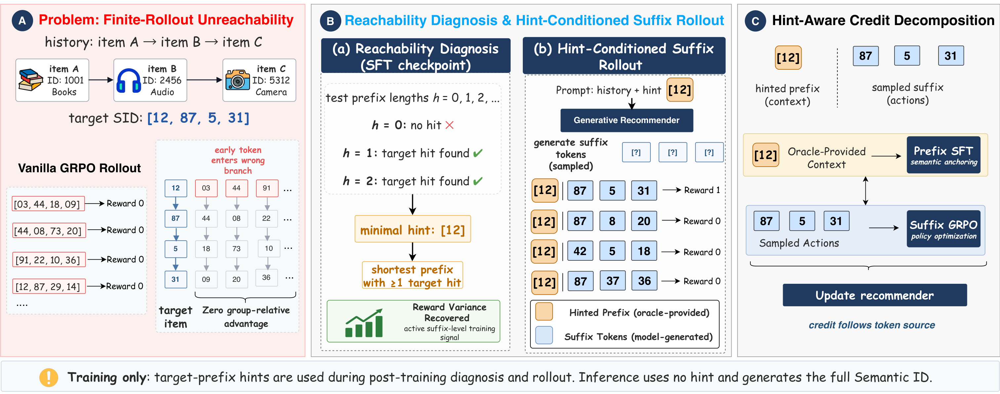
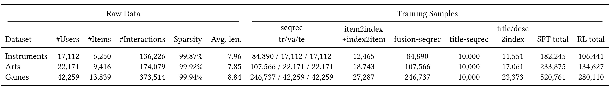
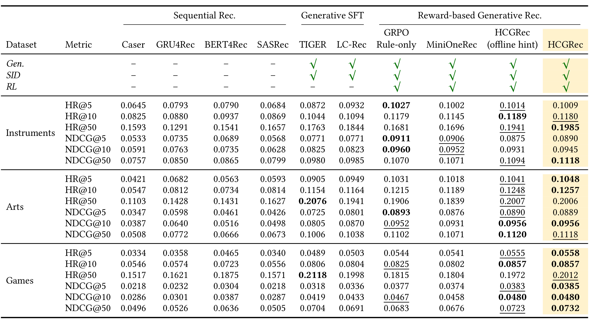
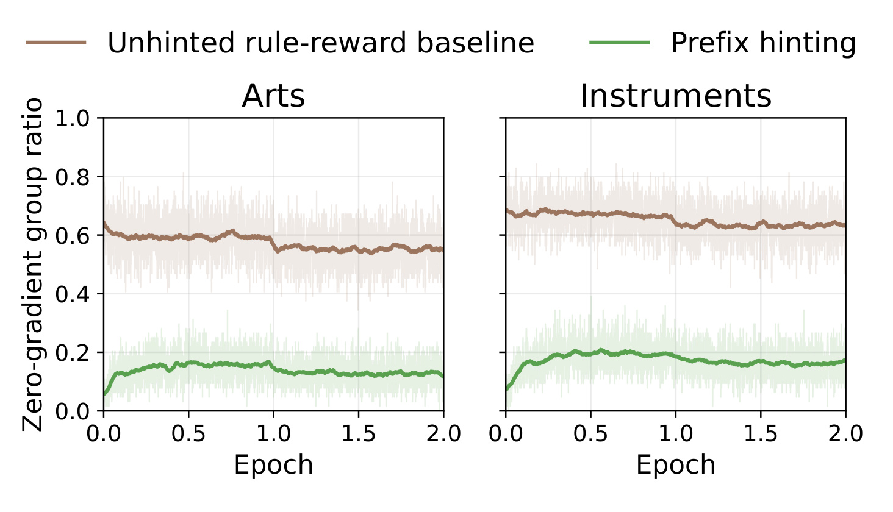
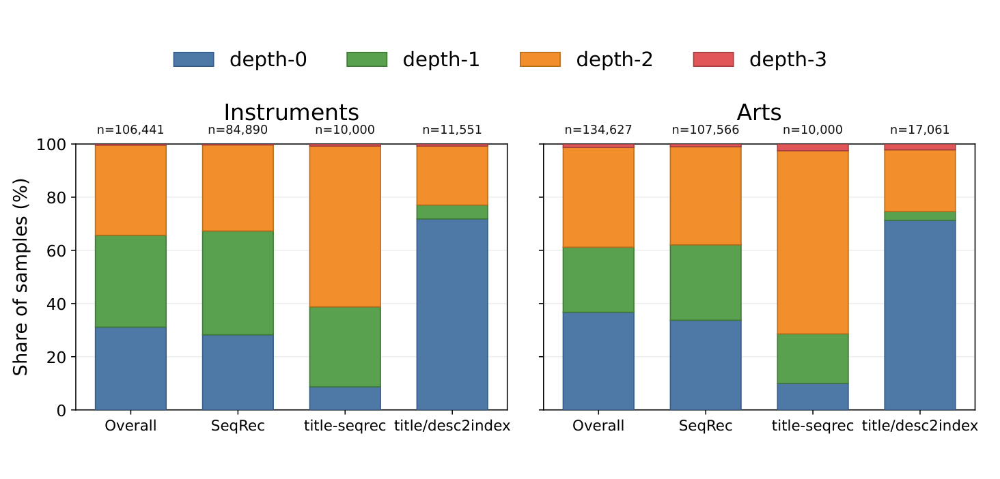
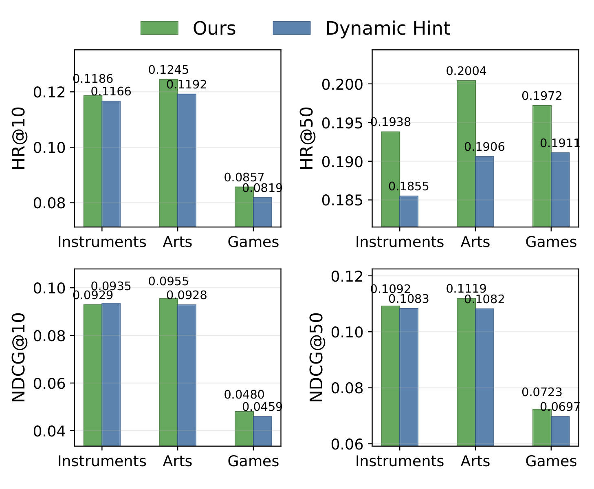
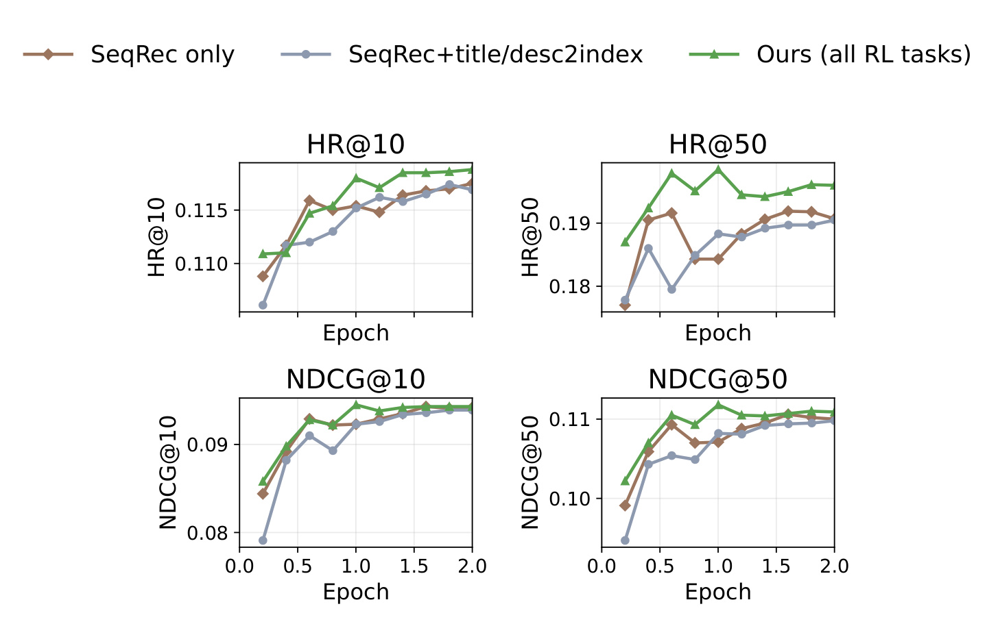
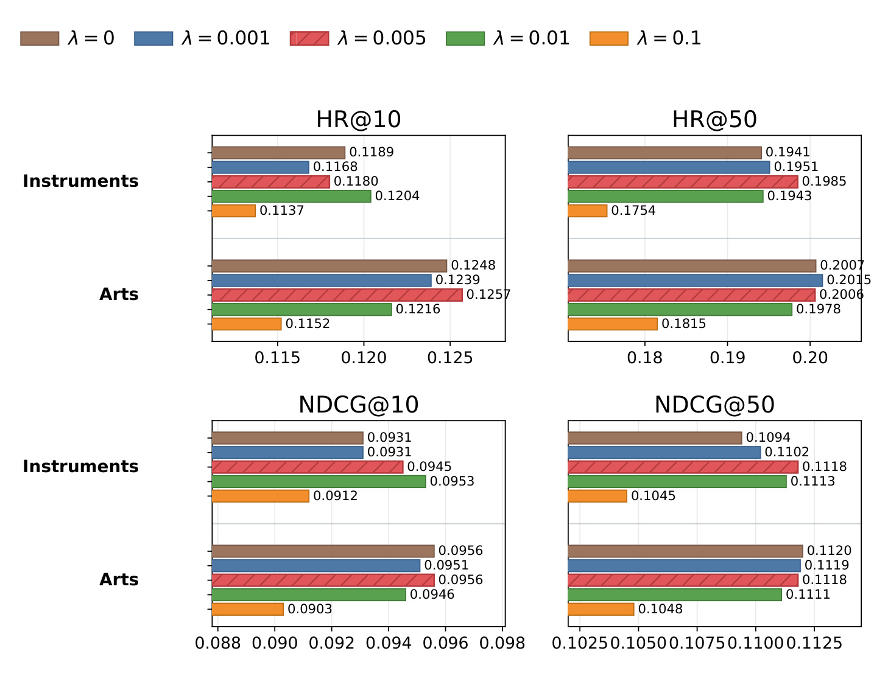

HCGRec：用最短前缀提示修复 Semantic ID 生成推荐的奖励不可达问题
HCGRec 的英文原题是 HCGRec: Hint-Conditioned Generative Recommendation with Semantic IDs，由上海交通大学张康宁、方昊天与美团罗旭坤等作者合作完成，已被 CIKM 2026 接收。论文把注意力放在 Semantic ID 推荐器的奖励后训练：模型不是给全量物品逐个打分，而是像语言模型一样生成目标物品的离散 token 序列。论文入口为 arXiv:2608.11980。作者在论文与 arXiv 页面给出了 GRec 代码链接，但该仓库在 2026-08-14 核验时返回 HTTP 404，因此目前只能记为“已给出链接、仓库不可访问或尚未公开”，不能据此声称代码可复现。
Semantic ID 把物品组织成前缀树：一旦早期 token 走错分支，有限 rollout 几乎不可能再抵达目标物品，组内奖励便全部相同，GRPO 得不到任何相对优势。问题不只是奖励稀疏，而是奖励在当前策略和有限采样预算下根本不可达。
1. 背景和问题
传统序列推荐通常把下一物品预测写成对候选集打分：GRU4Rec 用循环网络编码历史，SASRec、BERT4Rec 用注意力建模序列，再从物品集合里排序。Semantic-ID 生成式推荐换了一套输出接口。每个物品先由内容表示、聚类或残差量化得到一个短离散序列，例如本文使用四个 token；模型输入用户历史、标题或描述，自回归生成下一物品的完整 ID。它的吸引力在于检索与语言生成共享同一种 token 空间，用户历史、物品文本和物品标识可以统一进入语言模型。但统一接口也把“选一个物品”变成了“沿前缀树连续做多次不可撤销选择”：越早的 token 越像粗粒度分支，首 token 错了，后续 token 即使局部合理，也仍在错误子树里搜索。
当前常见训练流程有两个阶段。第一阶段以 teacher forcing 做监督语义对齐，让模型学会从历史 SID、标题序列、物品标题或描述映射到目标 ID。第二阶段再用推荐奖励做 post-training，使生成行为贴近用户偏好或业务目标。GRPO 很适合这种场景，因为它从同一个 prompt 采样一组候选，不需要单独训练 value model，而是用组内奖励均值和方差构造相对优势。问题在于，本文实验使用完整 Semantic ID exact match：四个 token 全对才得 1，否则得 0。如果十六条 rollout 都没有命中目标，它们的奖励不是“很差但有差异”，而是整组全为 0；标准化后所有 advantage 都为 0，这个训练样本便不产生有用更新。
“奖励稀疏”还不足以准确描述这一失败。一般的稀疏奖励问题可以靠更密集的 shaping、不同最终奖励或事后纠错缓解；这里的稀疏性受 SID 前缀树约束。早期 token 进入错误粗语义分支后，剩余生成条件已经被错误前缀锁定，继续扩大同一分支中的 suffix 搜索未必能提高命中率。换言之，目标物品理论上存在于动作空间，却在当前 checkpoint 和有限 rollout budget 下处于不可达区域。论文记录的无 hint 训练中，即使到后期仍有很大比例的组保持零奖励方差，因此不是单纯增加训练步数就会自动消失的冷启动现象。
HCGRec 的任务是把这类训练样本重新搬回“奖励可区分”的区域。它先用 SFT checkpoint 对每个样本做离线诊断：从不提示开始，依次尝试暴露 1、2、3 个目标前缀 token，找到能在诊断采样中至少命中一次目标的最短深度。容易样本保持原样；困难样本只获得刚好足够的目标前缀，模型仍须生成余下 suffix。这里有两条关键边界。第一，hint 是训练期 scaffold，不是推理期额外信息，部署时仍须从用户上下文生成完整 ID；第二，hint 也不是简单“喂答案”，因为最大深度小于 ID 长度，至少一个 token 必须由策略生成，而且提示只施加在无 hint 时不可达的样本上。
真正棘手的是 credit assignment。被插入 prompt 的目标前缀来自 oracle，它不是策略探索出来的动作，若对这些 token 施加 GRPO，就把外部给定上下文误记成策略功劳；但若彻底忽略前缀，又可能破坏 SFT 阶段学到的物品语义和粗到细树结构。HCGRec 因而按 token 来源分工：hinted prefix 用 SFT anchoring，sampled suffix 用 GRPO。这比全序列统一加 SFT 正则更精细，也让论文可以分别验证两件事：恢复 reachability 是否是主要收益来源，以及前缀/后缀的 credit 拆分是否还能提供额外增益。
2. 方法
2.1 Semantic-ID 生成目标与 SFT 语义对齐
设物品目录为 (\mathcal I)，物品 (v) 的 Semantic ID 为 (\mathbf y(v)=(y_1,\ldots,y_M))，其中每个 (y_t) 来自离散 SID 词表，本文取 (M=4)。给定用户上下文 (x)，生成器按 token 分解完整物品概率；同一分解同时约束训练时的 teacher forcing 和部署时的逐步解码，因此必须先明确它再讨论 hint：
符号解释：(\theta) 是模型参数；(x) 可由历史 SID、历史标题或物品侧文本组成；(M) 是 ID 长度；(y_t) 是第 (t) 个语义 token；(\mathbf y_{<t}) 是已经生成的前缀。这个乘积既是基础训练分解，也是推理时无 hint 生成完整 ID 的接口，因此 HCGRec 没有另造部署期解码器。监督阶段在数据 (\mathcal D={(x_i,\mathbf y_i^*)}) 上最小化 teacher-forced 负对数似然：
符号解释：(\mathbf y^) 是目标物品 ID，星号表示 oracle 目标；期望遍历监督语义对齐样本；条件中的 (\mathbf y_{<t}^) 是正确前缀。SFT 能让历史、标题、描述和 SID 进入相容表示空间，却只证明模型在正确前缀条件下能预测后续 token，不保证 on-policy rollout 会自行进入正确前缀。这正是 teacher forcing 与奖励后训练之间的缺口。
2.2 GRPO 的有限 rollout 不可达组
post-training 对同一 prompt 从旧策略采样 (G) 个完整 ID，计算奖励 (r_j=R(x,\hat{\mathbf y}_j,\mathbf y^*))，再标准化为组内优势。HCGRec 没有另换 policy optimizer，而是先从标准 GRPO 的失效点出发，因此这一步的均值、方差与 advantage 关系是后续诊断的直接依据：
符号解释：(j) 是 rollout 序号；(\mu_r)、(\sigma_r) 分别为组内奖励均值和标准差；(\epsilon) 防止数值不稳定。如果所有 (r_j=0)，则均值和方差都为零，每个 (A_j) 也为零。GRPO 的 token 概率比 (\rho_{j,t}=\pi_\theta/\pi_{\theta_{old}}) 即使不同，也会乘上零 advantage，所以裁剪代理目标没有方向可学。论文进而用奖励方差给出 checkpoint-specific、budget-specific 的不可达判据：
符号解释：(\rho_{j,t}) 是新策略与采样旧策略在同一 token 上的概率比；(\varepsilon) 是裁剪半径；(\ell_{\mathrm{clip}}) 防止一次策略更新过大；(G) 与 (M) 分别是 rollout 组大小和完整 ID 长度。标准目标对全部位置求和，而 HCGRec 稍后把它改成只对 (t>h) 的 suffix 位置求和；无论哪一种，只要 (A_j=0)，这一整条 rollout 都无法提供方向。
符号解释：(G_d) 是诊断 rollout 数；(\tau) 是很小的方差阈值；(\mathbb I) 是指示函数。exact-match 场景取 (\tau=0)，通常对应全组未命中。这个定义没有声称目标在理论上不可生成，而是说当前模型在给定采样预算下无法产生奖励可区分的候选。因此扩大 (G_d)、更换 checkpoint 或奖励函数都会改变诊断结果。
2.3 离线可达性诊断与最短目标前缀 hint
HCGRec 从已经完成语义对齐的 (\pi_{\mathrm{sft}}) 出发。对候选 hint 深度 (h)，取目标前缀 (\mathbf p_h^=(y_1^,\ldots,y_h^))，拼入输入 (x_h=[x;\mathbf p_h^])，只采样剩余后缀。若诊断组至少有一次得到完整目标 ID，则该深度通过 reachability test：
符号解释：(\tilde{\mathbf s}^{(h)}_j) 是诊断采样的 suffix；(\oplus) 表示前缀和后缀拼接；(\tilde{\mathbf y}^{(h)}_j) 是完成后的候选 ID。此式要求奖励仍在完整 ID 上判断，不能只看后缀局部匹配。
符号解释：(B_h=1) 表示深度 (h) 在有限诊断预算内至少命中一次目标。它比“奖励方差非零”更严格地要求目标 item 真正出现，也使 hint 选择可以在训练前固定并复查。
符号解释：(\mathcal C) 收集所有通过诊断的深度；(H_{\max}<M) 保证至少留下一个待生成 token；(h^) 取最短可达前缀。若 (h^=0)，样本保持无 hint 形式；若集合为空，样本记为 unresolved，而不是强行把完整答案塞给模型。最短原则让 HCGRec 只改变确实需要救援的分支入口，并尽可能保留后缀探索空间。
2.4 前缀 SFT 与 suffix-only GRPO 的 credit 拆分
诊断后，训练策略在 (x_h) 上采样后缀并补成完整 ID。这里必须先把“输入中已有的目标前缀”和“模型继续采样的后缀”写成两个对象，因为 HCGRec 后续不是按位置粗略切 loss，而是按二者的真实来源分配 credit；完整候选仍用于计算统一奖励：
符号解释：(\hat{\mathbf s}_{j,h}) 才是旧策略实际采样的动作；(\mathbf p_h^*) 是 oracle context；(\hat{\mathbf y}^{(h)}_j) 用于统一计算完整物品奖励。当 (h=0) 时，它退化为 vanilla generation；当 (h>0) 时，策略从正确粗分支内继续探索，但不能把提示 token 算作自身探索成果。

Figure 1 的 A 面板把故障放在前缀树中：目标是 [12,87,5,31]，前三条 rollout 首 token 已落入 03、44、91 分支，第四条虽然第一步是 12，后续仍未命中，所以奖励全为 0、相对优势归零。B 面板从 (h=0) 开始测试，发现无 hint 不命中、暴露 [12] 后能够产生一次正确完成，便停止在最短深度 1；后续 reward 只比较模型生成的三个 suffix token。C 面板则标明 [12] 是 oracle-provided context，以 prefix SFT 维持结构；[87,5,31] 是 sampled actions，以 suffix GRPO 优化。底部特别说明部署推理不使用 hint，这避免了把训练 scaffold 误读为线上需要目标答案。在 hinted group 中，HCGRec 只对 (t>h) 的位置计算组相对目标：
符号解释：(A_j^{(h)}) 由带 hint 的完整 ID 奖励构造；(\rho^{(h)}{j,t}) 比较新旧策略在相同 hinted context 和已生成 suffix 前缀下的 token 概率；(M-h) 是策略真正生成的长度；(\ell{\mathrm{clip}}) 是 PPO/GRPO 风格裁剪项。求和从 (h+1) 开始，明确排除 oracle 前缀。对被提示的前缀，模型仍需从原始上下文保留语义识别能力，因此加入局部 SFT anchoring：
符号解释：(\mathbb I[h>0]) 使无 hint 样本不承担额外前缀损失；(\lambda) 控制语义锚定强度；其余符号与前式一致。这里不是把 SFT 正则施加到完整生成序列，而是只稳定被 oracle 替代的那段动作。如果 (\lambda) 太小，hint 分支的语义对齐可能漂移；若太大，监督信号会压过 suffix 的奖励区分，Figure 6 正是对这个张力的实证检查。
2.5 Algorithm 1 的训练闭环与无 hint 推理
完整流程分成一次离线诊断和持续 post-training。第一阶段遍历训练集，对每个 ((x,\mathbf y^)) 从 (h=0) 到 (H_{\max}) 采样 (G_d) 个 suffix，保存最短通过深度；论文实验用诊断 beam 16、最大 hint depth 3，未解决样本深度默认记为 3 供诊断统计，但算法只把满足 (B_{h^}=1) 的 hint 接入有效训练。第二阶段每个 minibatch 读取已存 (h^*)，用当前旧策略采样 16 个 suffix，计算完整 ID 奖励、组 advantage、suffix GRPO 与 prefix SFT，再以二者之和更新模型。离线固定 hint 的额外价值是训练目标稳定且不需要每一步重做诊断；代价是 checkpoint 进步后，旧的困难度标签可能过时。
训练和推理的差异必须保持清楚。训练期可以看到目标前缀，是因为它在构造学习信号；推理期既没有目标 ID，也不运行 reachability diagnosis，模型直接按第一式从 (x) 生成四个 token。因此 HCGRec 不增加服务侧特征依赖或第二套模型，但训练侧要付出完整离线 diagnostic pass，并存储 per-instance hint depth。对更长 ID、更大训练集或持续更新的模型，这一前处理成本可能成为瓶颈。
3. 实验结果
3.1 数据、任务、奖励与受控比较
实验使用 Amazon Product Reviews 的 Musical Instruments、Arts, Crafts and Sewing、Video Games 三个公开域，简称 Instruments、Arts、Games。用户序列按时间排序，最大历史长度 50；最近一次交互做测试、倒数第二次做验证，其余做训练。指标是 HR@5/10/50 和 NDCG@5/10/50，采用全物品 ranking 而非 sampled negatives；生成方法 beam size 50。每个 variant 只按 NDCG@10 从同步 checkpoint 中选择一个 checkpoint，再从同一 checkpoint 读取全部指标，减少“每个指标各挑最好点”的选择偏差。

Table 1 显示三域都非常稀疏：Instruments 有 17,112 用户、6,250 物品和 136,226 次交互，稀疏度 99.87%；Arts 为 22,171/9,416/174,079，稀疏度 99.92%；Games 为 42,259/13,839/373,514，稀疏度 99.94%。平均序列只有 7.96、7.85、8.84，说明模型不能依赖很长行为证据。SFT 使用 SeqRec、双向 item2index/index2item 与 fusion-seqrec，总样本分别为 182,245、233,875、520,761；RL 池由 SeqRec、固定 10,000 条 title-seqrec、title/desc2index 组成，总量为 106,441、134,627、280,110。任务规模差异也解释了 Figure 3 中各 task 的 hint 深度分布为何不能用同一固定值概括。
模型从 Qwen2.5-3B-Instruct 初始化，做 full-parameter SFT，使用 8 张 GPU、bf16、最大长度 512。奖励后训练运行 8 个进程、2 个 epoch、每 prompt 16 个 completion，学习率 (10^{-5})、温度 1.0。奖励是完整 ID exact match：
符号解释：只有生成 ID 的所有 token 与目标完全一致才得 1，否则为 0；带 hint 时先把 oracle prefix 与 sampled suffix 拼接，再检查完整 ID。这一设置把 reachability 问题放大得很清楚，但也意味着实验没有覆盖连续相关性奖励、曝光/点击等真实反馈。基线包括 Caser、GRU4Rec、BERT4Rec、SASRec，生成式 SFT 的 TIGER、LC-Rec，以及同一 SFT checkpoint、semantic index、group size、训练预算与选择规则下的 GRPO Rule-only、MiniOneRec、offline-hint HCGRec 和完整 HCGRec，因此奖励后训练内部比较相对受控。
3.2 主结果：强项集中在分支稳定性，而非全表胜出

Table 2 首先支持“生成式语义对齐有用”：TIGER、LC-Rec 多数指标明显高于传统序列模型，而奖励后训练进一步抬升若干 top-K 结果。完整 HCGRec 在 Instruments 上最突出的优势位于深 cutoff，HR@50 为 0.1985、NDCG@50 为 0.1118，均为表中最佳；Arts 上 HR@5/10 为 0.1048/0.1257，NDCG@10 为 0.0956；Games 上 HR@5 为 0.0558、HR@10 为 0.0857、NDCG@50 为 0.0732。与 LC-Rec 相比，这些结果说明 reward post-training 不只重复 SFT 的 next-token 拟合，而能改善完整 ID 在更宽候选范围中的稳定生成。
但这张表不支持“所有指标全面领先”。Instruments 的 HR@5、NDCG@5、NDCG@10 分别由 GRPO Rule-only 取得 0.1027、0.0911、0.0960，完整 HCGRec 是 0.1009、0.0890、0.0945；Arts 的 HR@50 由 TIGER 以 0.2076 领先，HCGRec 为 0.2006；Games 的 HR@50 同样是 TIGER 0.2118 更高，HCGRec 为 0.2012。offline hint 也在 Instruments HR@5/10 和 Arts NDCG@50 等位置等于或略优于完整 credit decomposition。合理结论是：reachability intervention 在很多关键指标上有效，尤其改善正确分支下的 suffix 优化与较深 cutoff，但 token-source credit 并不是每个 operating point 的普适增益。
offline-hint 与完整 HCGRec 的差异帮助拆贡献。只引入可达前缀，表现已经很有竞争力，说明主要干预来自“把样本搬回正确分支”；加入 prefix SFT + suffix-only GRPO 后，Instruments HR@50/NDCG@50、Arts HR@5/10、Games HR@5/NDCG@50 又有增益，说明 credit 拆分确有额外价值。反过来，部分 cutoff 的轻微退化提示 (\lambda)、任务混合和 checkpoint 选择之间仍有耦合，不能把 Figure 1 中清晰的机制图直接等同于每项指标必涨。
3.3 RQ2：训练信号恢复、hint 深度与离线策略

Figure 2 的纵轴是组内奖励方差为零的样本比例，越低表示越多样本能产生相对优势。无 hint 曲线在 Arts 训练末期约为 0.55，在 Instruments 约为 0.63；prefix hint 分别降至约 0.12 和 0.17。按比例看，hint 没有让所有样本都可训练，但把多数 inactive group 转成 reward-bearing comparison。浅色原始波动仍很大，说明单步 minibatch 的可达性噪声不小；平滑曲线的持续间隔比某个瞬时低点更有说服力。这是全文最直接的机制证据：性能提升与“零 advantage 样本减少”同时出现，而不是只给终局 HR/NDCG 后倒推原因。两域曲线方向一致，也降低了单一数据集偶然性的担忧。

Figure 3 把每个域拆成 Overall、SeqRec、title-seqrec、title/desc2index。两域的 title-seqrec 都把更大质量放在 depth-2/3，说明仅凭历史标题生成目标 SID 时，SFT checkpoint 更难在浅层进入正确语义树；title/desc2index 则以 depth-0/1 为主，物品自身文本对 ID 的直接 grounding 更容易。SeqRec 处于中间。Instruments 与 Arts 的形状相似但不完全一致，证明 hint 深度既受任务接口影响，也受域内物品分布影响。若统一暴露一个 token，会对深层困难样本救援不足、对本就可达样本泄露过多结构；per-instance 最短深度因此有明确经验动机。

Figure 4 比较离线一次确定深度的 Ours 与训练中动态重算深度的 Dynamic Hint。Ours 在 Instruments/Arts/Games 的 HR@10 为 0.1186/0.1245/0.0857，动态策略为 0.1166/0.1192/0.0819；NDCG@50 为 0.1092/0.1119/0.0723，对手为 0.1083/0.1082/0.0697。HR@50 中 Instruments 是 0.1938 对 0.1855，Arts 是 0.2004 对 0.1906，Games 则动态 0.1911 低于 Ours 0.1972。图中也能看到个别 top-heavy 数值并非总由固定策略占优，因此更稳妥的解释是离线 policy 在多数展示读数上更强且省去在线诊断成本。它固定了 suffix 学习所在分支，减少训练目标随模型能力变化而漂移；缺点是后期 checkpoint 已改善时，早期存下的 hint 可能变得过深。
3.4 RQ3/RQ4：任务范围、损失拆分与 anchoring 强度
任务范围消融比较 SeqRec only、SeqRec+title/desc2index 和全部三个 RL task。全任务设置在 Instruments 最终得到 HR@10 0.1180、HR@50 0.1985、NDCG@10 0.0945、NDCG@50 0.1118；双任务版本多数时间最弱，只在极少点上有可忽略差异。title-seqrec 虽然需要更深 hint，却补入了“由标题历史预测 SID”的跨表示条件，可能迫使正确前缀在不同输入视角下都保持一致，从而扮演正则化角色。

Figure 5 不只给最终柱状值，而是展示两轮训练轨迹。绿色全任务曲线在 HR@50 和 NDCG@50 上较早建立优势，经过中期波动后仍维持较高终点；HR@10、NDCG@10 的三条曲线更接近，但全任务通常在峰值与尾部不弱。灰色双任务曲线波动更明显，尤其 HR@50 早期下探，说明简单加入 title/desc2index 并不能替代完整任务混合。曲线证据削弱了“全任务只是恰好选中一个好 checkpoint”的解释，却仍不足以证明是哪类样本迁移造成增益；论文没有给梯度相似度或逐任务留一分析。
损失拆分方面，作者在同一 offline minimal-hint 条件下比较 suffix-only GRPO、full-sequence SFT+GRPO 与 prefix-SFT+suffix-only GRPO。完整设计在 Instruments 得 HR@5 0.1009、HR@50 0.1985、NDCG@5 0.0890、NDCG@50 0.1118，为三个损失设计中最强。全序列 SFT 没有超过只锚定前缀的方案，说明监督压力扩展到 sampled suffix 会与 reward discrimination 抢夺优化空间。这一结果与 token 来源解释一致：oracle 前缀需要稳定语义，策略后缀需要保持 on-policy credit；但论文只在 Instruments 做这组拆分，跨域稳定性仍待验证。

Figure 6 显示 (\lambda) 不是越大越好。Instruments HR@10 在 0.01 时为 0.1204，高于默认 0.005 的 0.1180；HR@50、NDCG@50 则在默认 0.005 达到 0.1985、0.1118。Arts HR@10 在 0.01 为 0.1257，HR@50 在 0.001 为 0.2015，NDCG@50 在 0 为 0.1120、默认值为 0.1118。多数最佳点落在 0.001-0.01，而 0.1 在两域四项指标上都明显变弱，例如 Instruments HR@50 降至 0.1754。因而默认 0.005 是跨指标折中，不是普遍最优；prefix SFT 的角色是温和校准，权重过大会把后缀重新拉回 teacher-forced 拟合。
把四组证据连起来，论文形成较完整的因果链：Figure 2 证明 hint 恢复组内方差，Figure 3 表明困难度随任务变化，Figure 4 说明固定最短策略多数情况下比动态深度稳定，Figure 5/6 再把收益限定在恰当任务覆盖和适中 anchoring 下。仍需注意，所有结果来自三个 Amazon 域、同一四-token semantic index、Qwen2.5-3B 和 exact-match reward；尚未报告线上 A/B、长 ID、大目录扩展成本、连续反馈或多随机种子置信区间。代码仓库当前也不可访问，使复现配置暂时只能依据论文文字。
4. 总结
4.1 我的判断
HCGRec 最有价值的贡献不是“给困难样本一点答案”，而是把 Semantic-ID post-training 的失败重新定义为有限预算下的 prefix-tree reward reachability，并让干预、credit 与证据彼此对齐。离线诊断只对确实不可达的样本暴露最短前缀；prefix 是外部上下文，用 SFT 维持语义；suffix 是策略动作，用 GRPO 学奖励。训练末期 inactive group 从约 55%-63% 降到 12%-17%，为机制提供了比单一性能表更直接的支持。主结果同时保留了反例：完整方法在多个关键指标最佳，却没有在所有 cutoff 压过 Rule-only、offline hint 或 TIGER，因此更适合解读为“改善分支稳定性和可训练样本利用率”，而不是新的统一 SOTA 结论。
对工程实践的启发是先测训练信号是否可达，再设计更复杂的 reward。若生成式召回的组内 reward 长期同值，继续调 PPO clip、增加 epoch 或堆叠全序列 SFT，可能都绕不开错误前缀锁死的动作空间。可以记录首个可区分前缀深度、每任务 inactive ratio 和 suffix entropy，按样本决定是否提供结构 scaffold。同时必须严格区分系统提供的 context 与模型采样的 action，避免把 oracle token 纳入 policy credit。这一原则也可迁移到层级检索、树搜索和结构化解码，但前提是存在明确、可校验且不会在推理期泄漏答案的中间结构。
4.2 局限与后续跟进
局限至少有五点。第一，诊断保证只相对于固定 SFT checkpoint、(G_d) 和 (H_{\max}) 成立；采样偶然性会把部分可达样本误判为困难，也会遗漏预算外可达路径。第二，实验固定四-token SID 和最大深度 3，更长、可变长或严重不均衡的语义树可能需要不同 hint 成本，甚至出现前缀过度泄露。第三，exact-match reward 刻意制造清楚的零方差信号，但真实推荐常用连续相关性、停留时长或多目标 reward，收益能否保留尚未验证。第四，三个公开 Amazon 域平均序列短且无线上反馈，不能外推到亿级目录、实时兴趣漂移或服务延迟。第五，离线全量诊断与 per-instance depth 存储增加训练准备成本，模型更新后旧 hint 还可能过时；论文没有给端到端诊断耗时、显存/通信成本或多随机种子方差。再加上作者给出的代码仓库目前 404，复现风险仍高。
后续最值得做四项检查。其一，在相同 checkpoint 上改变 (G_d)、beam、温度和 (H_{\max})，画出误判率、诊断成本、inactive ratio 与最终 HR/NDCG 的 Pareto 曲线，确认收益不是单一预算特例。其二，把四-token RQ-VAE ID 扩展到长 ID、可变长 ID 和不平衡树，统计不同层的错误传播与最短可达深度，验证“最短前缀”是否仍是合适 scaffold。其三，引入分级相关性、无效物品约束和真实用户反馈，比较 reward shaping 与 reachability hint 是互补还是替代。其四，在代码公开后复现 offline/dynamic hint、suffix-only/full-sequence/prefix-only 三组关键消融，并补充三至五个随机种子、诊断 wall-clock 和吞吐；只有这些证据齐全，才能判断 HCGRec 是否能从清晰的研究原型走向大规模生成式推荐训练。